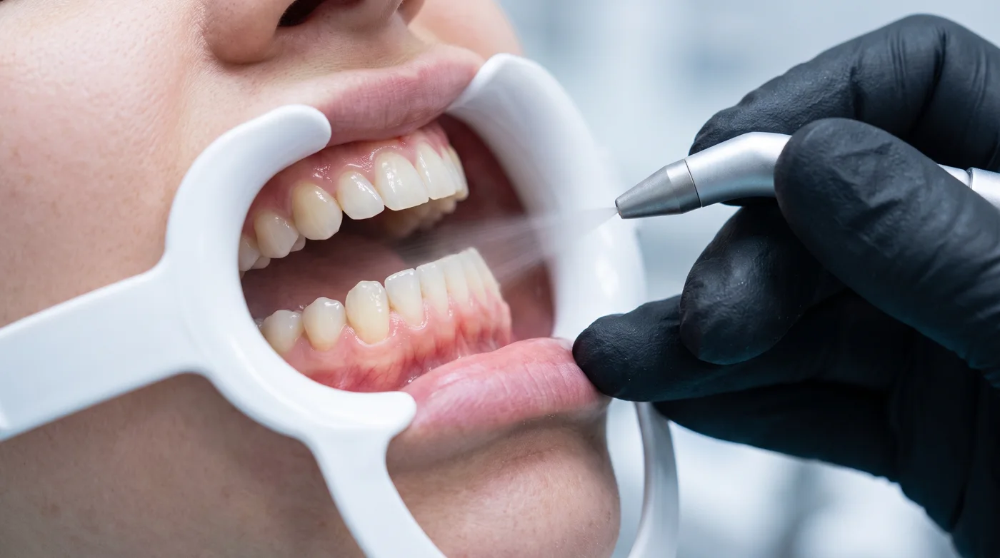

Материал для специалистов
Разбор рассчитан на практикующих гигиенистов. Настройки конкретного оборудования уточняйте в инструкции производителя.
1. Одна фракция на всю процедуру
Что происходит. Порошок выбирается под пациента целиком, а не под зону. В результате либо чувствительные участки обрабатываются избыточным абразивом, либо плотный налёт снимается мелкой фракцией втрое дольше нужного.
Как правильно. Фракция меняется по зонам внутри одной процедуры: мелкая — у края десны, на оголённых шейках, вокруг реставраций и имплантов; крупная — по плотному пигменту на наддесневых поверхностях. Подробности — в разборе абразивности.
2. Задержка струи в одной точке
Что происходит. Привычка «дожать» проблемный участок переносится с ультразвука, где она оправдана. При воздушно-абразивной обработке суммарная экспозиция концентрируется на малой площади.
Как правильно. Непрерывное движение, ориентир порядка 5 секунд на поверхность, при остаточном налёте — второй проход, а не удлинение первого. Между проходами вода успевает смыть снятое, и струя работает по поверхности, а не по взвеси.
3. Струя в десневую борозду под прямым углом
Что происходит. Это основной механизм развития подкожной эмфиземы — проникновения воздуха под давлением в мягкие ткани. Осложнение редкое, но развивается быстро и выглядит для пациента пугающе: стремительный отёк, крепитация при пальпации.

Как правильно. У края десны угол уменьшают и работают по касательной, вдоль оси зуба. Для обработки внутри кармана — только субгингивальная насадка с рассеивающей подачей и минимально достаточное давление. Протокол разобран в отдельной статье.
Если эмфизема всё же развилась
Обработка прекращается немедленно. Пациент остаётся под наблюдением, дальнейшая тактика определяется врачом. Самостоятельное «дождаться, пройдёт» без осмотра недопустимо.
4. Крупная фракция по оголённому дентину и цементу
Что происходит. Дентин и цемент корня существенно мягче эмали. Абразив, безопасный для интактной эмали, для этих тканей избыточен. Пациент получает выраженную послепроцедурную чувствительность и связывает её с процедурой в целом.
Как правильно. Оголённые шейки, клиновидные дефекты и зоны рецессии обрабатываются мелкой фракцией на основе эритритола, острым углом, с сокращённой экспозицией.
5. Работа вокруг реставраций и имплантов без смены материала
Что происходит. Угловатая частица нарушает полировку композита, керамики и поверхности абатмента. Пациент изменений не заметит, но шероховатая поверхность удерживает биоплёнку — и следующий эпизод воспаления наступает раньше. Повреждение полировки необратимо.
Как правильно. В зоне реставраций и имплантов — только мелкодисперсный порошок на основе эритритола или глицина. Подробный разбор допустимого инструментария — в статье об имплантах.
6. Процедура без собранного анамнеза
Что происходит. Два ограничения выявляются исключительно опросом и не видны при осмотре:
- Бессолевая диета — порошки на основе бикарбоната натрия недопустимы.
- Тяжёлые заболевания дыхательных путей — ограничение к аэрозольобразующим процедурам в целом.
Как правильно. Вопросы включены в стандартный опрос перед процедурой, ответы фиксируются в карте. Это одновременно и клиническая безопасность, и юридическая защита клиники.
7. Пренебрежение уходом за наконечником
Что происходит. Влага в порошке и остатки в канале после работы приводят к частичному засору. Подача становится рывковой, а рывок — это неконтролируемый скачок локального воздействия. Гигиенист компенсирует «плюющуюся» струю давлением, и цикл замыкается.
Как правильно.
- Продувка канала после каждой смены порошка.
- Флакон закрыт, отсыревшая партия не досыпается к свежей.
- Разборка и промывка сопла по регламенту производителя.
- Пульсация струи — сигнал остановиться и обслужить наконечник, а не поднять давление.
Подробнее об уходе и совместимости — в отдельном материале.
Сводка
| Ошибка | Основной риск | Заметно сразу? |
|---|---|---|
| Одна фракция на всё | Избыточное воздействие либо потеря времени | Нет |
| Задержка струи | Локальная перегрузка зоны | Нет |
| Струя в борозду | Подкожная эмфизема | Да |
| Крупная фракция по дентину | Выраженная чувствительность | Через часы |
| Абразив у реставраций | Необратимая потеря полировки | Нет |
| Нет анамнеза | Противопоказания пропущены | По ситуации |
| Нет ухода за наконечником | Рывковая, непредсказуемая подача | Да |
Обратите внимание на третий столбец: четыре ошибки из семи не дают немедленной обратной связи. Именно поэтому они устойчивы и требуют не столько знаний, сколько протокола и самоконтроля.
Материал носит информационный характер и не заменяет клинические протоколы вашей организации и инструкцию производителя оборудования. Имеются противопоказания, необходима консультация специалиста.